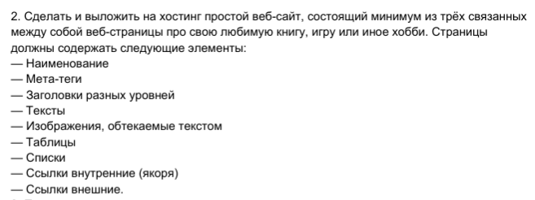

лабораторная №3 по оптимизации веб-приложений
я не занимался хтмл кссом со второго курса.
и я не хочу вспоминать их
потому я сделаю так как помню и сколько вспомню по примеру моих же работ с второго курса
парочку потом прикреплю
но я не понимаю а зачем нужна 2лаба это же литералли 3 но без вразумительной страницы
конкретно эту страницу я не называю взразумительной, я уверен другие сделали что-то адекватное
моё хобби - щитпостинг


а я даже и не знаю и не помню что значит половина этих требований
и я не смотрел/слушал лекции

| если | нужна | таблица |
|---|---|---|
| то | пусть | будет |
| я не знаю | чем её | заполнять |
- лореп имусм
- чё то там
- текст рыба
и списки туда же
- autistic psycho
- autistic virgin
- please be patient i have autism
и второй с циферками
переход на вторую страницу пока не придумал чё будет
третья страница (третья страница)
а вот и обещанные второкурсные работы
я их никак не дополнял поэтому кнопки вернуться сюда нет
жаль я не сохранил работу с экзамена